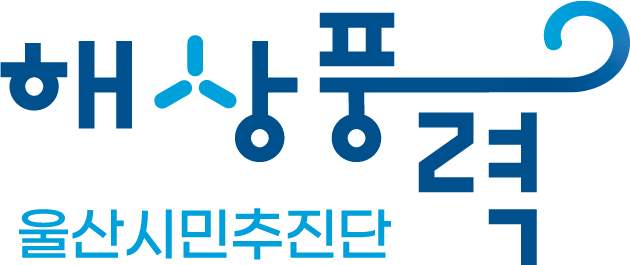

''

menu
지지서명하기
언론보도
회견문
Q&A
의견 보내기
홍보 일정
언론보도
“더는 정쟁 도구 돼선 안 돼” 부유식 해상풍력 시민들이 나섰다...부유식해상풍력울산시민추진단 출범 기자회견
울산저널i
"울산부유식해상풍력은 미래먹거리, 시민 힘 모아야"
오마이뉴스
‘부유식해상풍력 울산시민추진단’ 발족
울산제일일보
“부유식 해상풍력, 울산 산업전환과 RE100 대응에 필수”
울산저널i
울산시민들, '부유식 해상풍력' 지원 나선다
오마이뉴스
“울산 부유식해상풍력 성공을”
경상일보
해상풍력울산시민추진단 발족 기자회견
울산매일